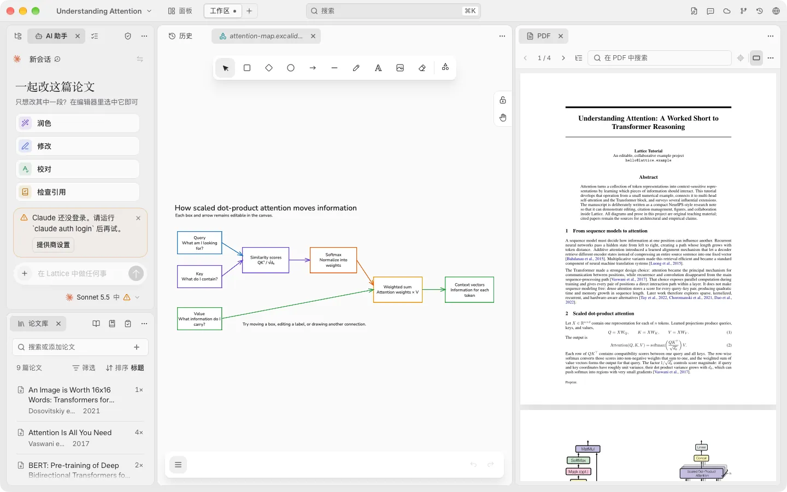

常见问题
编译失败，看不出原因。 先看编译问题面板里的第一个问题，后面的往往是它引起的。打开 日志 看 LaTeX 的原话。然后在命令面板（⌘K）里试试 从头编译。见 编译与排错。
提示缺少 LaTeX 依赖，或找不到某个宏包。 BasicTeX 并不包含 Overleaf 上的全部宏包。点问题里的安装按钮，或者使用 设置 › TeX 检查 › 安装所需工具。
编译完全找不到 LaTeX。 打开 设置 › TeX 检查。如果列出缺少的工具，从「上手」清单或 MacTeX 安装 TeX，再重新打开项目。
添加论文或查找引用不起作用。 这些功能需要小工具 uv。设置 › TeX 检查 会显示 uv 和 uvx 是否存在；安装所需工具 会安装它们。
AI 助手提示未登录。 面板会显示哪个服务商没有登录，例如「Claude is not authenticated」。在「终端」里登录一次（Claude Code 用 claude auth login）再试，或者在 模型设置 中换一个服务商。

Overleaf 不再同步。 打开 设置 › Overleaf。如果登录过期，点 重新连接。含有冲突标记的文件会暂停同步，直到你解决冲突。
某个面板不见了。 面板 › 重置布局 会找回所有面板。误删了工作区，马上点通知里的 撤销。
文字丢了。 打开 历史：每次保存、每次助手修改、每次 Overleaf 上的改动都在里面，恢复文件 可以把文件找回来。
遇到其他问题。 帮助 › 报告问题… 会保存一份去除隐私信息的日志，你可以附到 issue 里，并打开 GitHub Issues。设置 › 日志 可以在应用内查看日志。